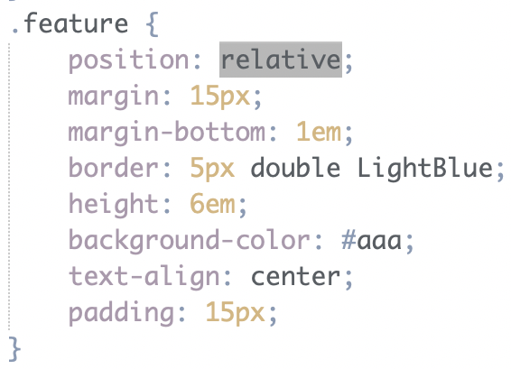
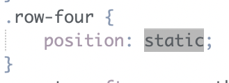
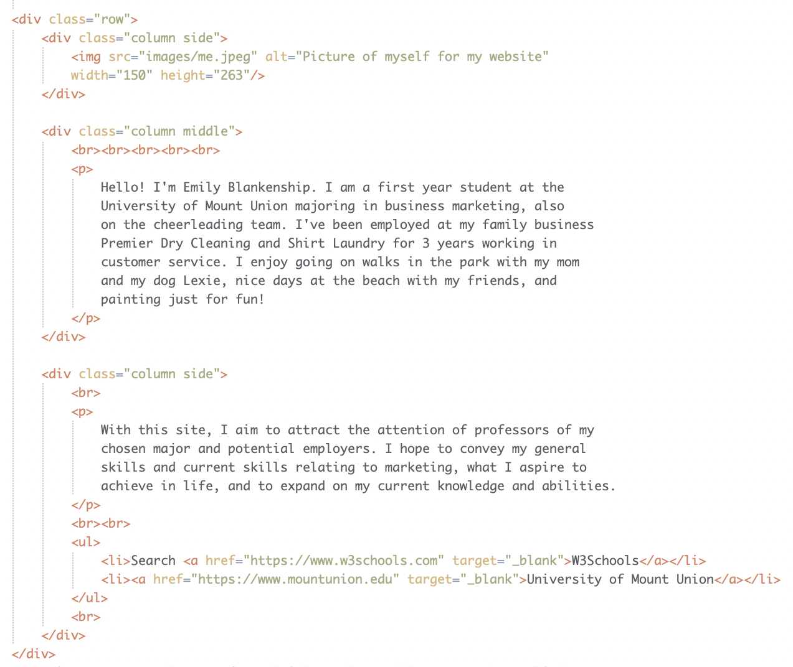
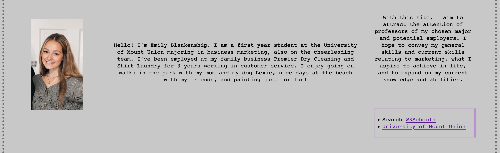

On this page, you will discover the many changes I have made to my project since the
start of it. Also, you can read about other elements that go into making a website,
rather than tags and properties as summarized on the previous page. A lot of time and
hard work goes into developing HTML and CSS web pages and sites. This page breifly summarizes
the journey through the making of this project, My Website.
After receiving back project 1, I was very proud with my score and took action on the
feedback that was given. The first error I had corrected was adding the semicolon at
the end of each "resumé" in my code to add the accent onto the e.
The second error I corrected was changing the property that sets the bullet type of the
unordered list on my favorites page. I originally had type="square", then corrected it
to style="list-style-type: square". After these two corrected errors, my project 1 was ready
to continue with project 2.
Looking at the feedback from project 2, I saw I had to make much more changes than I needed
to after project 1. I edited the name of my CSS external style sheet, added a table on my
resumé page, and set all closing brackets within the style sheets to be on their own line.
Also, I put my div tags to use and added classes once I continued working with styles and started
applying layouts to my pages. I moved repeated embedded styles to the external style sheet and
edited my class names as well. I also edited my resumé PDF link to open up in a new tab
and removed my phone number from the page and PDF, and relative linked the terms on the
requirements page to the page they're shown on. My project 2 was then ready for project 3.
For project 3, the additional edits I made was adding CSS layouts to all of my pages, added
this page to my website, implemented a proper navigation bar, and linked my terms to their corresponding
pages. I added more content to my favorites and requirements pages and incorporated more boxes as well.
Working on project 3 provided me with more, needed practice using div tags and allowed me to produce more creative
layouts and styles for my website.
A common theme accross all CSS boxes implemented on my site is that they
all are a double border. All boxes have a background color except for the box
on my landing page. They consist of different thicknesses, colors, and include
different margins and padding.


A relative positioning scheme has been implemented to my boxes on this page, the layouts page.
This content does not go with the normal flow or default positioning of the page. I was able
to customize and play around with the styles to position the boxes myself using positioning
properties such as padding, margins, floats, heights and widths, and more! Also, a static
positioning scheme was applied to my resumé PDF link on my resumé page, as it stands
on its own with the normal flow of the page.




I chose to use CSS layout setups to design the pages of my website. I believe
I have more freedom when developing my layouts and applying styles compared to
HTML layout setups. Also, creating CSS layouts allowed me to work more with div
tags and helped me better understand how they function.


back to top